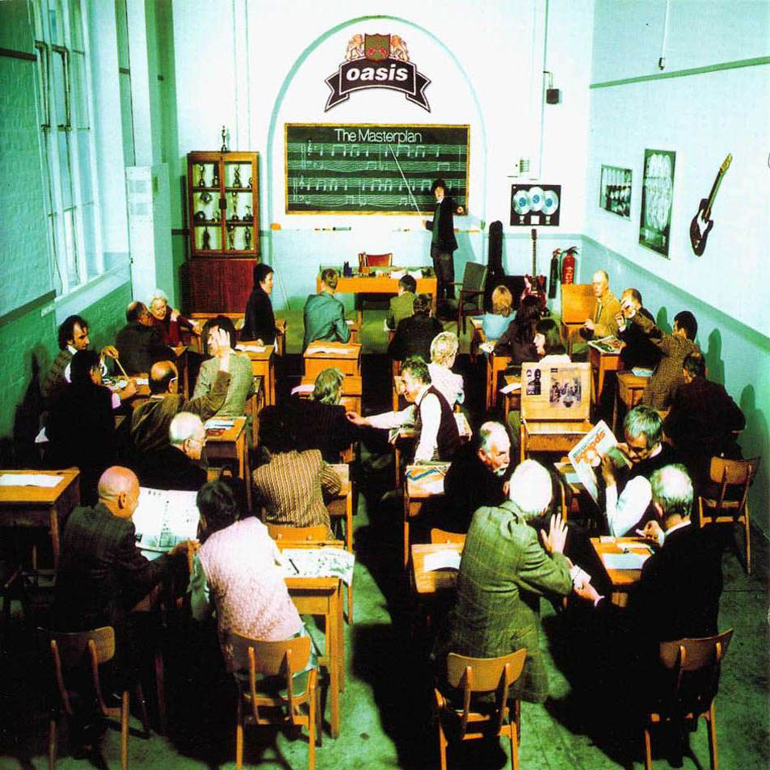

ALBUMS
B-Side. The Masterplan
오아시스의 B-Side 컴필레이션 앨범이다. 1998년 11월 오아시스가 발매하였으며, 이전 앨범들과는 달리 싱글 B-side곡만을 모은 앨범이다. UK 차트 2위, 빌보드 51위를 기록했으며 200만장 판매고를 기록했다. 이 앨범은 애초에 싱글을 비싸게 구입해야만 B면 곡을 들을 수 있었던 미국 등 몇몇 해외 시장을 위해서 기획되었으나 결국 영국 내에서도 발매되었다. Be Here Now가 전작에서 높아진 기대치를 충족하지 못했던 상황에서 발매된 이 앨범은 오히려 더욱 높은 평가를 받았다. 전반적으로 정통 로큰롤 스타일 음악이 주를 이루고 있지만, Talk Tonight, Rockin' Chair, Half the World Away 등 어쿠스틱 기타로 연주하는 곡들도 있다. 그 외에도 Acquiesce 같은 리암과의 듀엣곡이나 Going Nowhere, The Masterplan 등 B사이드 컴필레이션 앨범인 덕에 노엘 갤러거가 단독으로 부르는 곡이 많으니 노엘 팬이라면 들을만한 가치가 있다.
1. Acquiesce
Some Might Say 싱글 수록곡. 노엘이 어쿠스틱 기타로 'Morning Glory'를 부르면서 시작한다.[2] 오아시스의 짜투리 곡이 악명을 떨치게 해준 곡. 노엘이 후렴 코러스를 부르는데, 이는 리암이 녹음 당시 취한 나머지 목소리를 높이 못내서라고. 노엘이 멤버를 만나러 웨일즈로 가던 도중 기차 안에서 작사한 곡. 팬들에게 사랑받는 곡 중 하나이며, 2000년대에 들어서도 웸블리 라이브에서 공연하는 등 라이브에서도 자주 불렀던 곡이다. 가사의 내용과 형제가 서로 나누어 부른다는 점 때문에 갤러거 형제간의 형제애를 상징하는 곡으로 많이 거론되곤 하지만 노엘은 이 곡은 자기 자신들에 대한 곡이 아니라고 한다.
2. Underneath The Sky
Don't Look Back In Anger 싱글 수록곡. 레슬리 스피커를 통해서 일그러진 기타 사운드와 함께 시작하며 서정적인 곡이다. 노엘이 좋아하는 곡 중 하나. 피아노는 본헤드가 쳤다.
3. Talk Tonight
Some Might Say 싱글 수록곡. 노엘이 첫 미국 투어에서 리암과 싸운 뒤 라스베이거스와 샌프란시스코로 가서 느꼈던 것을 노래한 곡이다. 1994년 10월 텍사스 스튜디오에서 Half the World Away와 함께 이 곡을 녹음했다. 밴드를 이탈한동안 함께 있었던 어떤 여자에 관한 노래로, 그녀는 노엘에게 다시 밴드로 돌아가라고 말했다고 한다. 노엘의 말에 따르면 그녀가 레코드 회사에 자기를 밀고했다고도 한다.
4. Going Nowhere
Stand By Me 싱글 수록곡. 발매일은 97년이지만 곡은 1990년에 크리에이션 레코드와 계약한 직후에 쓰여졌다. 버트 바카락에 깊은 영향을 받은 곡이다. 첫 녹음 당시 형제가 크게 싸워서 리암이 빡친 나머지 녹음을 거부했고, 결국 노엘이 혼자서 노래를 불렀다.
5. Fade Away
Cigarettes & Alcohol 싱글 수록곡. 초기 오아시스가 라이브로 많이 연주했던 곡으로, 초기의 스타일이 묻어나는 곡이다. 기타 솔로가 없는 곡이며 많은 팬들의 사랑을 받는 곡이다. 노엘이 아직까지도 어쿠스틱 세션으로 공연에서 부르는 곡이다. 전쟁아동후원 목적으로 만들어진 The Help Album에는 이 곡의 Warchild버전이 수록되었다. 노엘이 보컬, 리암이 백보컬을 맡았으며 이후에 Don't Go Away의 싱글 B-Side로도 수록된다.
6. The Swamp Song
Wonderwall 싱글 수록곡. 4집의 Fuckin' in the bushes와 더불어 몇 안되는 인스트루멘탈 곡이다. 토니 맥캐롤 이후 들어온 드러머 앨런 화이트와의 연습 도중에 잼 연주한 곡이다. 2집 (What's the story) Morning Glory?의 각각 6번 트랙과 11번 트랙에 연주의 일부분이 수록되어 있다. 초기에는 간단하게 말 그대로 The Jam이라는 이름으로 불렸으나 후에 멤버들이 바꾸었다. 우연찮게도 더 잼의 폴 웰러가 녹음에 참여한 곡이기도 하다.
7. I Am The Walrus
Cigarettes & Alcohol 싱글 수록곡. 비틀즈의 Magical Mystery Tour에 수록된 동명의 곡을 커버한 것이다. 발매 당시에는 글래스고에서 연주했다고 써놨지만 사실은 글렌이글스 호텔에서 열린 소니 뮤직 세미나에서 연주한 것이다. 오아시스가 무명일 때부터 해체하기 직전까지도 공연에서 앵콜로 자주 공연하였다.
8. Listen Up
Cigarettes & Alcohol 싱글 수록곡. 팬들에게도 좋은 평을 받고 있고 노엘도 좋아하는 노래지만 하필 이전에 나왔던 곡들이었던 Supersonic과 Live Forever와 너무 비슷한 나머지 정규 앨범에 수록되지는 않았다.
9. Rockin’ Chair
Roll With It 싱글 수록곡. 당시 앨범 작업 중 이 곡과 Wonderwall 중 한 곡이 비사이드로 빠져야 하는 상황이었는데, 결국에는 이 곡을 뺐다고 한다. 지금 자신이 살고 있는 곳을 떠나고 싶어하는 열망을 노래하고 있다.
10. Half The World Away
Whatever 싱글 수록곡. Talk Tonight을 녹음할 때 같이 녹음했다. 어쿠스틱 기타로 연주했다. 더 잼의 폴 웰러가 좋아하는 노래라고 함. 역시 어디론가 떠나고 싶어 하는 곡이다. 노엘이 아직까지도 공연하는 노래.
11. (It’s Good) To Be Free
Whatever 싱글 수록곡. 본헤드가 곡 마지막에 아코디언 연주를 선보인다. 노엘이 라스베이거스에서 머물면서 작곡한 곡.
12. Stay Young
D' You Know What I Mean? 싱글 수록곡. 이 노래는 3집에 수록될 예정이었지만 마지막에 다른 곡에 밀려 수록되지 않았다.
13. Headshrinker
Some Might Say 싱글 수록곡. 오아시스의 노래들 중 가장 스피드 메탈에 가까운 곡이다. 노엘의 말을 빌리자면 "롤링 스톤즈가 섹스 피스톨즈를 만난 것 같은 노래." 짧으면서(사실 그렇게 짧진 않다) 사운드가 좋아 노엘이 좋아하는 노래. 토니 맥캐롤과 녹음했던 마지막 곡이기도 하다.
14. The Masterplan
Wonderwall 싱글 수록곡. 노엘이 사랑하는 곡들 중 하나다. Wonderwall 싱글에 들어갈 비사이드 곡 하나를 쓰기 위해서 녹음 세션을 잡았고, 결국 이 대곡 하나가 탄생하게 되었는데 당시 오아시스 소속사인 크리에이션의 사장이었던 앨런 맥기는 이 곡을 비사이드 곡으로 내면 안된다고 하자 노엘은 "당신이 비사이드 곡쓰라고 녹음 잡아놨잖아? 그래서 썼는데 뭐 어쩌라고?"라면서 우긴 끝에 비사이드 곡으로 들어가게 된 것이다. 하지만 정신을 차렸는지, 먼 훗날 노엘은 이 곡을 싱글로 내지 않은 걸 후회하는 발언을 자주 하게 된다. 2015년 솔로 투어때 정식 셋리스트로 들어갔다.